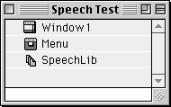
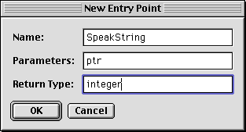
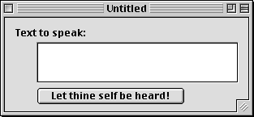
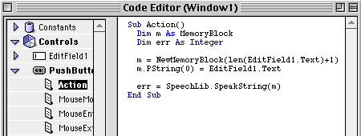

Speech!
A guide to getting your program to stand and deliver.
By Chris Murphy
My best friend challenged me to write a program that could talk. Conquering this challenge would send me home with a jackpot valued at $1…plenty of motivation for this hungry writer. Ah, but where to start? I immediately turned to café.realbasic.com on Hotline. There, I found a helpful project that demonstrates the use of speech in a RealBasic program and colleagues to help explain it. (Developer Tools/Reusable Classes/Multimedia/speech.p)
At first I thought getting RealBasic to speak text would be difficult. I was wrong, it was only a matter of dragging the speech manager extension from the Extensions Folder into the RealBasic Project Window. A Speech lib icon appeared in the project window. Double clicking the Speech lib icon opened a window where I could enter calls to the library. So I clicked the "New…" button and typed SpeakString as the name, "ptr" as the parameter, and integer as the return type. You probably know what an integer is, but ptr stands for pointer–a special type of variable used in C that points to some data.
Calling SpeakString allows your program to speak up to 255 characters, which amounts to a sentence or two. (If you want your program to say more, you will have to call the SpeakText command. Unfortunately, this requires a channel parameter which I was unable to provide through RealBasic. So far, the only solution I know of is to get an RB speech plugin, or write an AppleScript.)
In the example project that I studied, the author uses an EditField and a Pushbutton (see the picture of a window a little bit below this). The text in the EditField is sent to the SpeechLib when the user presses the Pushbutton. Working with Shared Libraries in RealBasic requires you to create memory blocks. This code takes you through the whole process. A memory block is created one character longer than the text in the EditField, and the text is then stored in a Pascal String at the beginning of the memory block. Why must the memory block be one byte larger than the text? That's how a pascal string works–it stores the length (1 byte) first, and then the string. Errors numbers are stored in the err integer.

Here's the code for that PushButton:

SpeakString is just one of many calls you can make to the Speech lib.
I got my hands on a copy of the universal header file and looked at some of the other
calls one can make to the Speech lib. You can count and change voices and vary the
pitch and rate of the voices. You can start, stop, and pause speech, and much more.
It wouldn’t take much to whip up these commands into a plug-in. (I should point
out that a few Hypercard XCMD’s give you access to the Speech lib.)
While the challenge proved to be more of a demonstration of RealBasic’s
power than an intellectual feat, it exposed that there is still plenty of room for
third party improvement. Here is the Apple Speech Synthesis header file for plug-in
programmers and the otherwise curious.
/*
File: SpeechSynthesis.h
Contains: Speech Interfaces.
Version: Technology: System 7.5
Release: Universal Interfaces 3.2
Copyright: © 1989-1998 by Apple Computer, Inc., all rights reserved.
Bugs?: For bug reports, consult the following page on
the World Wide Web:
http://developer.apple.com/bugreporter/
*/
#ifndef __SPEECHSYNTHESIS__
#define __SPEECHSYNTHESIS__
#ifndef __MACTYPES__
#include <MacTypes.h>
#endif
#ifndef __MIXEDMODE__
#include <MixedMode.h>
#endif
#ifndef __FILES__
#include <Files.h>
#endif
#if PRAGMA_ONCE
#pragma once
#endif
#ifdef __cplusplus
extern "C" {
#endif
#if PRAGMA_IMPORT
#pragma import on
#endif
#if PRAGMA_STRUCT_ALIGN
#pragma options align=mac68k
#elif PRAGMA_STRUCT_PACKPUSH
#pragma pack(push, 2)
#elif PRAGMA_STRUCT_PACK
#pragma pack(2)
#endif
enum {
kTextToSpeechSynthType = FOUR_CHAR_CODE('ttsc'),
kTextToSpeechVoiceType = FOUR_CHAR_CODE('ttvd'),
kTextToSpeechVoiceFileType = FOUR_CHAR_CODE('ttvf'),
kTextToSpeechVoiceBundleType = FOUR_CHAR_CODE('ttvb')
};
enum {
kNoEndingProsody = 1,
kNoSpeechInterrupt = 2,
kPreflightThenPause = 4
};
enum {
kImmediate = 0,
kEndOfWord = 1,
kEndOfSentence = 2
};
/*------------------------------------------*/
/* GetSpeechInfo & SetSpeechInfo selectors */
/*------------------------------------------*/
enum {
soStatus = FOUR_CHAR_CODE('stat'),
soErrors = FOUR_CHAR_CODE('erro'),
soInputMode = FOUR_CHAR_CODE('inpt'),
soCharacterMode = FOUR_CHAR_CODE('char'),
soNumberMode = FOUR_CHAR_CODE('nmbr'),
soRate = FOUR_CHAR_CODE('rate'),
soPitchBase = FOUR_CHAR_CODE('pbas'),
soPitchMod = FOUR_CHAR_CODE('pmod'),
soVolume = FOUR_CHAR_CODE('volm'),
soSynthType = FOUR_CHAR_CODE('vers'),
soRecentSync = FOUR_CHAR_CODE('sync'),
soPhonemeSymbols = FOUR_CHAR_CODE('phsy'),
soCurrentVoice = FOUR_CHAR_CODE('cvox'),
soCommandDelimiter = FOUR_CHAR_CODE('dlim'),
soReset = FOUR_CHAR_CODE('rset'),
soCurrentA5 = FOUR_CHAR_CODE('myA5'),
soRefCon = FOUR_CHAR_CODE('refc'),
soTextDoneCallBack = FOUR_CHAR_CODE('tdcb'), /* use with SpeechTextDoneProcPtr*/
soSpeechDoneCallBack = FOUR_CHAR_CODE('sdcb'), /* use with SpeechDoneProcPtr*/
soSyncCallBack = FOUR_CHAR_CODE('sycb'), /* use with SpeechSyncProcPtr*/
soErrorCallBack = FOUR_CHAR_CODE('ercb'), /* use with SpeechErrorProcPtr*/
soPhonemeCallBack = FOUR_CHAR_CODE('phcb'), /* use with SpeechPhonemeProcPtr*/
soWordCallBack = FOUR_CHAR_CODE('wdcb'),
soSynthExtension = FOUR_CHAR_CODE('xtnd'),
soSoundOutput = FOUR_CHAR_CODE('sndo')
};
/*------------------------------------------*/
/* Speaking Mode Constants */
/*------------------------------------------*/
enum {
modeText = FOUR_CHAR_CODE('TEXT'), /* input mode constants */
modePhonemes = FOUR_CHAR_CODE('PHON'),
modeNormal = FOUR_CHAR_CODE('NORM'), /* character mode and number mode constants
*/
modeLiteral = FOUR_CHAR_CODE('LTRL')
};
enum {
soVoiceDescription = FOUR_CHAR_CODE('info'),
soVoiceFile = FOUR_CHAR_CODE('fref')
};
typedef struct OpaqueSpeechChannel* SpeechChannel;
struct VoiceSpec {
OSType creator;
OSType id;
};
typedef struct VoiceSpec VoiceSpec;
typedef VoiceSpec * VoiceSpecPtr;
enum {
kNeuter = 0,
kMale = 1,
kFemale = 2
};
struct VoiceDescription {
long length;
VoiceSpec voice;
long version;
Str63 name;
Str255 comment;
short gender;
short age;
short script;
short language;
short region;
long reserved[4];
};
typedef struct VoiceDescription VoiceDescription;
struct VoiceFileInfo {
FSSpec fileSpec;
short resID;
};
typedef struct VoiceFileInfo VoiceFileInfo;
struct SpeechStatusInfo {
Boolean outputBusy;
Boolean outputPaused;
long inputBytesLeft;
short phonemeCode;
};
typedef struct SpeechStatusInfo SpeechStatusInfo;
struct SpeechErrorInfo {
short count;
OSErr oldest;
long oldPos;
OSErr newest;
long newPos;
};
typedef struct SpeechErrorInfo SpeechErrorInfo;
struct SpeechVersionInfo {
OSType synthType;
OSType synthSubType;
OSType synthManufacturer;
long synthFlags;
NumVersion synthVersion;
};
typedef struct SpeechVersionInfo SpeechVersionInfo;
struct PhonemeInfo {
short opcode;
Str15 phStr;
Str31 exampleStr;
short hiliteStart;
short hiliteEnd;
};
typedef struct PhonemeInfo PhonemeInfo;
struct PhonemeDescriptor {
short phonemeCount;
PhonemeInfo thePhonemes[1];
};
typedef struct PhonemeDescriptor PhonemeDescriptor;
struct SpeechXtndData {
OSType synthCreator;
Byte synthData[2];
};
typedef struct SpeechXtndData SpeechXtndData;
struct DelimiterInfo {
Byte startDelimiter[2];
Byte endDelimiter[2];
};
typedef struct DelimiterInfo DelimiterInfo;
typedef CALLBACK_API( void , SpeechTextDoneProcPtr )(SpeechChannel chan, long refCon,
const void **nextBuf, unsigned long *byteLen, long *controlFlags);
typedef CALLBACK_API( void , SpeechDoneProcPtr )(SpeechChannel chan, long refCon);
typedef CALLBACK_API( void , SpeechSyncProcPtr )(SpeechChannel chan, long refCon,
OSType syncMessage);
typedef CALLBACK_API( void , SpeechErrorProcPtr )(SpeechChannel chan, long refCon,
OSErr theError, long bytePos);
typedef CALLBACK_API( void , SpeechPhonemeProcPtr )(SpeechChannel chan, long refCon,
short phonemeOpcode);
typedef CALLBACK_API( void , SpeechWordProcPtr )(SpeechChannel chan, long refCon,
unsigned long wordPos, unsigned short wordLen);
typedef STACK_UPP_TYPE(SpeechTextDoneProcPtr) SpeechTextDoneUPP;
typedef STACK_UPP_TYPE(SpeechDoneProcPtr) SpeechDoneUPP;
typedef STACK_UPP_TYPE(SpeechSyncProcPtr) SpeechSyncUPP;
typedef STACK_UPP_TYPE(SpeechErrorProcPtr) SpeechErrorUPP;
typedef STACK_UPP_TYPE(SpeechPhonemeProcPtr) SpeechPhonemeUPP;
typedef STACK_UPP_TYPE(SpeechWordProcPtr) SpeechWordUPP;
enum { uppSpeechTextDoneProcInfo = 0x0000FFC0 }; /* pascal no_return_value Func(4_bytes,
4_bytes, 4_bytes, 4_bytes, 4_bytes) */
enum { uppSpeechDoneProcInfo = 0x000003C0 }; /* pascal no_return_value Func(4_bytes,
4_bytes) */
enum { uppSpeechSyncProcInfo = 0x00000FC0 }; /* pascal no_return_value Func(4_bytes,
4_bytes, 4_bytes) */
enum { uppSpeechErrorProcInfo = 0x00003BC0 }; /* pascal no_return_value Func(4_bytes,
4_bytes, 2_bytes, 4_bytes) */
enum { uppSpeechPhonemeProcInfo = 0x00000BC0 }; /* pascal no_return_value Func(4_bytes,
4_bytes, 2_bytes) */
enum { uppSpeechWordProcInfo = 0x00002FC0 }; /* pascal no_return_value Func(4_bytes,
4_bytes, 4_bytes, 2_bytes) */
#define NewSpeechTextDoneProc(userRoutine) (SpeechTextDoneUPP)NewRoutineDescriptor((ProcPtr)(userRoutine),
uppSpeechTextDoneProcInfo, GetCurrentArchitecture())
#define NewSpeechDoneProc(userRoutine) (SpeechDoneUPP)NewRoutineDescriptor((ProcPtr)(userRoutine),
uppSpeechDoneProcInfo, GetCurrentArchitecture())
#define NewSpeechSyncProc(userRoutine) (SpeechSyncUPP)NewRoutineDescriptor((ProcPtr)(userRoutine),
uppSpeechSyncProcInfo, GetCurrentArchitecture())
#define NewSpeechErrorProc(userRoutine) (SpeechErrorUPP)NewRoutineDescriptor((ProcPtr)(userRoutine),
uppSpeechErrorProcInfo, GetCurrentArchitecture())
#define NewSpeechPhonemeProc(userRoutine) (SpeechPhonemeUPP)NewRoutineDescriptor((ProcPtr)(userRoutine),
uppSpeechPhonemeProcInfo, GetCurrentArchitecture())
#define NewSpeechWordProc(userRoutine) (SpeechWordUPP)NewRoutineDescriptor((ProcPtr)(userRoutine),
uppSpeechWordProcInfo, GetCurrentArchitecture())
#define CallSpeechTextDoneProc(userRoutine, chan, refCon, nextBuf, byteLen, controlFlags)
CALL_FIVE_PARAMETER_UPP((userRoutine), uppSpeechTextDoneProcInfo, (chan), (refCon),
(nextBuf), (byteLen), (controlFlags))
#define CallSpeechDoneProc(userRoutine, chan, refCon) CALL_TWO_PARAMETER_UPP((userRoutine),
uppSpeechDoneProcInfo, (chan), (refCon))
#define CallSpeechSyncProc(userRoutine, chan, refCon, syncMessage) CALL_THREE_PARAMETER_UPP((userRoutine),
uppSpeechSyncProcInfo, (chan), (refCon), (syncMessage))
#define CallSpeechErrorProc(userRoutine, chan, refCon, theError, bytePos) CALL_FOUR_PARAMETER_UPP((userRoutine),
uppSpeechErrorProcInfo, (chan), (refCon), (theError), (bytePos))
#define CallSpeechPhonemeProc(userRoutine, chan, refCon, phonemeOpcode) CALL_THREE_PARAMETER_UPP((userRoutine),
uppSpeechPhonemeProcInfo, (chan), (refCon), (phonemeOpcode))
#define CallSpeechWordProc(userRoutine, chan, refCon, wordPos, wordLen) CALL_FOUR_PARAMETER_UPP((userRoutine),
uppSpeechWordProcInfo, (chan), (refCon), (wordPos), (wordLen))
EXTERN_API( NumVersion )
SpeechManagerVersion (void) FOURWORDINLINE(0x203C, 0x0000, 0x000C,
0xA800);
EXTERN_API( OSErr )
MakeVoiceSpec (OSType creator,
OSType id,
VoiceSpec * voice) FOURWORDINLINE(0x203C, 0x0604, 0x000C, 0xA800);
EXTERN_API( OSErr )
CountVoices (short * numVoices) FOURWORDINLINE(0x203C, 0x0108, 0x000C,
0xA800);
EXTERN_API( OSErr )
GetIndVoice (short index,
VoiceSpec * voice) FOURWORDINLINE(0x203C, 0x030C, 0x000C, 0xA800);
EXTERN_API( OSErr )
GetVoiceDescription (const VoiceSpec * voice,
VoiceDescription * info,
long infoLength) FOURWORDINLINE(0x203C, 0x0610, 0x000C, 0xA800);
EXTERN_API( OSErr )
GetVoiceInfo (const VoiceSpec * voice,
OSType selector,
void * voiceInfo) FOURWORDINLINE(0x203C, 0x0614, 0x000C, 0xA800);
EXTERN_API( OSErr )
NewSpeechChannel (VoiceSpecPtr voice,
SpeechChannel * chan) FOURWORDINLINE(0x203C, 0x0418, 0x000C, 0xA800);
EXTERN_API( OSErr )
DisposeSpeechChannel (SpeechChannel chan) FOURWORDINLINE(0x203C, 0x021C,
0x000C, 0xA800);
EXTERN_API( OSErr )
SpeakString (ConstStr255Param textToBeSpoken) FOURWORDINLINE(0x203C,
0x0220, 0x000C, 0xA800);
EXTERN_API( OSErr )
SpeakText (SpeechChannel chan,
const void * textBuf,
unsigned long textBytes) FOURWORDINLINE(0x203C, 0x0624, 0x000C,
0xA800);
EXTERN_API( OSErr )
SpeakBuffer (SpeechChannel chan,
const void * textBuf,
unsigned long textBytes,
long controlFlags) FOURWORDINLINE(0x203C, 0x0828, 0x000C, 0xA800);
EXTERN_API( OSErr )
StopSpeech (SpeechChannel chan) FOURWORDINLINE(0x203C, 0x022C, 0x000C,
0xA800);
EXTERN_API( OSErr )
StopSpeechAt (SpeechChannel chan,
long whereToStop) FOURWORDINLINE(0x203C, 0x0430, 0x000C, 0xA800);
EXTERN_API( OSErr )
PauseSpeechAt (SpeechChannel chan,
long whereToPause) FOURWORDINLINE(0x203C, 0x0434, 0x000C, 0xA800);
EXTERN_API( OSErr )
ContinueSpeech (SpeechChannel chan) FOURWORDINLINE(0x203C, 0x0238,
0x000C, 0xA800);
EXTERN_API( short )
SpeechBusy (void) FOURWORDINLINE(0x203C, 0x003C, 0x000C, 0xA800);
EXTERN_API( short )
SpeechBusySystemWide (void) FOURWORDINLINE(0x203C, 0x0040, 0x000C,
0xA800);
EXTERN_API( OSErr )
SetSpeechRate (SpeechChannel chan,
Fixed rate) FOURWORDINLINE(0x203C, 0x0444, 0x000C, 0xA800);
EXTERN_API( OSErr )
GetSpeechRate (SpeechChannel chan,
Fixed * rate) FOURWORDINLINE(0x203C, 0x0448, 0x000C, 0xA800);
EXTERN_API( OSErr )
SetSpeechPitch (SpeechChannel chan,
Fixed pitch) FOURWORDINLINE(0x203C, 0x044C, 0x000C, 0xA800);
EXTERN_API( OSErr )
GetSpeechPitch (SpeechChannel chan,
Fixed * pitch) FOURWORDINLINE(0x203C, 0x0450, 0x000C, 0xA800);
EXTERN_API( OSErr )
SetSpeechInfo (SpeechChannel chan,
OSType selector,
const void * speechInfo) FOURWORDINLINE(0x203C, 0x0654, 0x000C,
0xA800);
EXTERN_API( OSErr )
GetSpeechInfo (SpeechChannel chan,
OSType selector,
void * speechInfo) FOURWORDINLINE(0x203C, 0x0658, 0x000C, 0xA800);
EXTERN_API( OSErr )
TextToPhonemes (SpeechChannel chan,
const void * textBuf,
unsigned long textBytes,
Handle phonemeBuf,
long * phonemeBytes) FOURWORDINLINE(0x203C, 0x0A5C, 0x000C, 0xA800);
EXTERN_API( OSErr )
UseDictionary (SpeechChannel chan,
Handle dictionary) FOURWORDINLINE(0x203C, 0x0460, 0x000C, 0xA800);
#if PRAGMA_STRUCT_ALIGN
#pragma options align=reset
#elif PRAGMA_STRUCT_PACKPUSH
#pragma pack(pop)
#elif PRAGMA_STRUCT_PACK
#pragma pack()
#endif
#ifdef PRAGMA_IMPORT_OFF
#pragma import off
#elif PRAGMA_IMPORT
#pragma import reset
#endif
#ifdef __cplusplus
}
#endif
#endif /* __SPEECHSYNTHESIS__ */